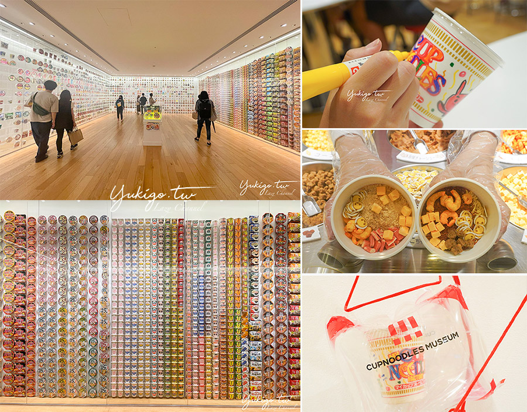
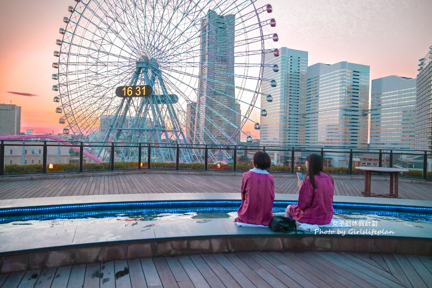
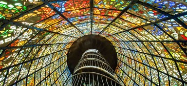
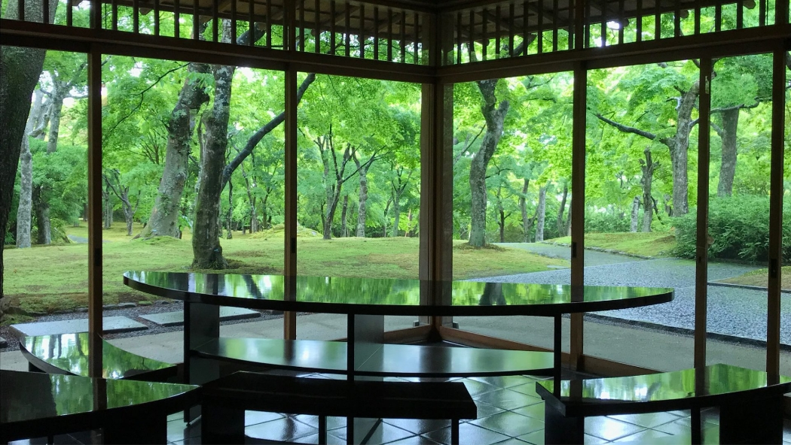
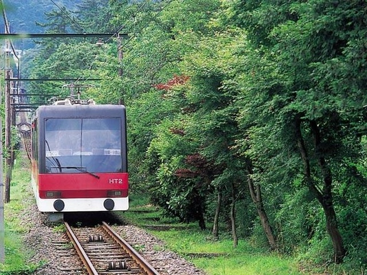
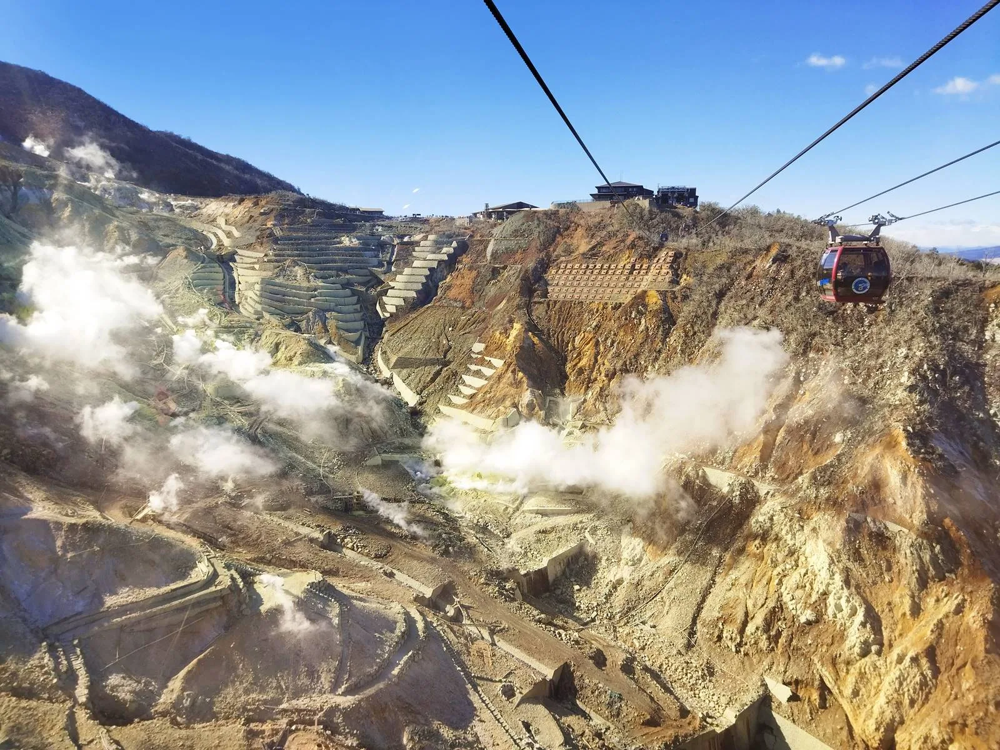
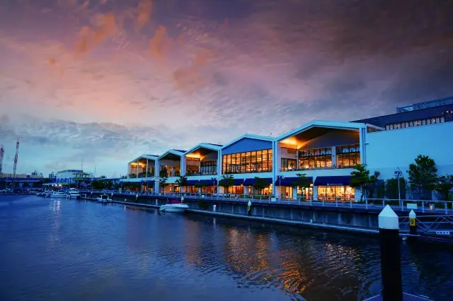
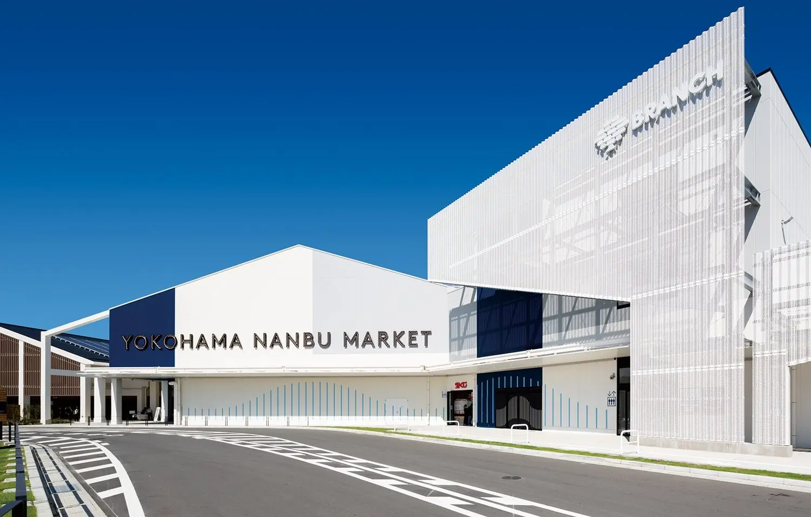
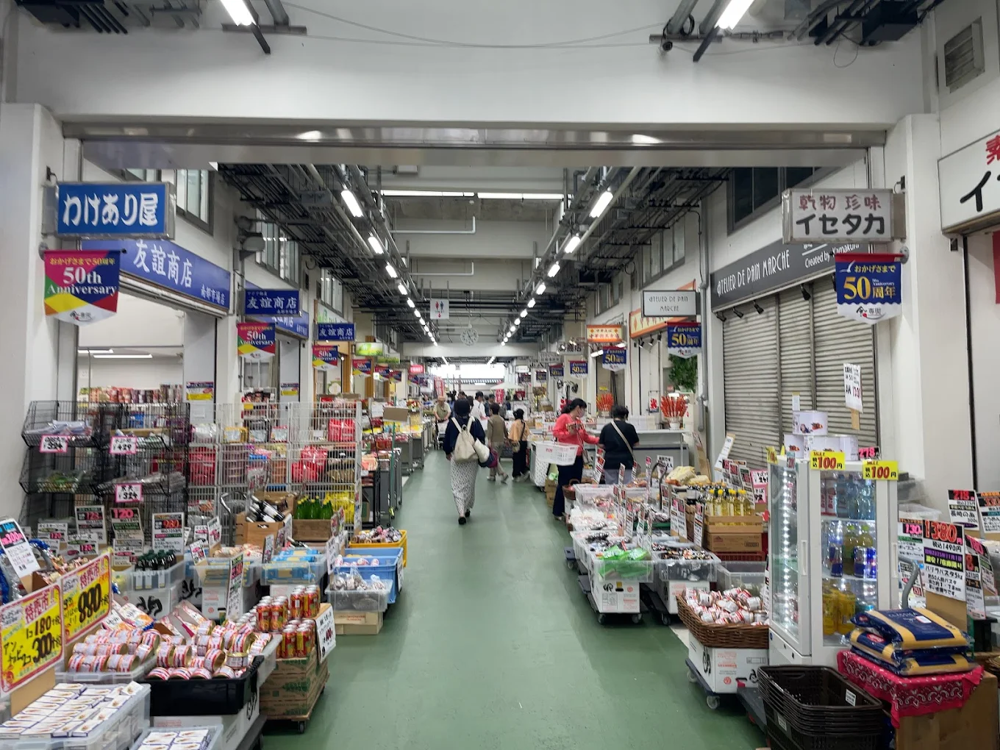

Day 5｜橫濱港未來 🌃
| 時間 | 行程 | 備註 |
|---|---|---|
| 10:00-12:30 | 合味道紀念館 | 泡麵DIY 40min，觀光工廠裡有小份拉麵可以嘗試 |
| 12:30-15:00 | 步行-紅磚倉庫 → 開港紀念會館 | 美食空間、時裝店和雜貨店等各種風格的店家，如果不想逛街可以去海產批發市場 |
| 15:30-17:30 | 萬葉俱樂部 | 泡湯看日落 |
| 17:30-18:00 | 搭空中纜車 → 櫻木町 | - |
| 18:00-20:00 | 晚餐-精釀啤酒餐廳 | 步行至餐廳約11min |



2026/09/19（六）— 2026/09/24（四）
含交通、提醒、美食與和平宣誓
| 時間 | 行程 | 備註 |
|---|---|---|
| 09:00-10:00 | 茜-租車 → 開車前往美術館 | 確認ETC、保險、開車前車子拍照 |
| 10:00-12:00 | 雕刻森林美術館 | 拍照散步 |
| 12:30-13:30 | 午餐：炸豬排丼飯(強羅站) | 強羅站附近的餐廳，或美術館裡面用餐 |
| 13:30-14:00 | 搭乘登山纜車：強羅站(車停這) → 公園上站 | - |
| 14:00-15:30 | 箱根美術館+茶屋 | 有時間就去箱根工藝館 |
| 15:30-16:00 | 搭乘登山纜車：公園上站 → 早雲山站 | 看山景 |
| 18:00-19:30 | 晚餐：鰻魚飯 | 回程還車，三島廣小路車站吃，回飯店休息 |
| 19:30-20:30 | 逛當地超市(買水果零食) | 自由參加 |



| 時間 | 行程 | 備註 |
|---|---|---|
| 9:00-10:00 | 🚌 三島站 → 元箱根港 | 東海巴士N65/N66 系統，約1hr |
| 10:00-10:40 | 箱根神社 | 從三島搭巴士抵達「元箱根港」後，步行去神社 |
| 10:45-11:30 | 海賊船(元箱根港 → 桃源台港)單段航程大約35min | 傳票升等可上甲板，(貝)購買小田原精釀可樂 |
| 11:30-12:00 | 空中纜車(桃源台港 → 大涌谷) | 單趟20min |
| 12:00-14:10 | 大涌谷地理導覽 | 先吃午餐，導覽13:00集合 |
| 14:20-15:35 | 回程：纜車＋船(大涌谷 → 桃源台 → 箱根町港) | - |
| 15:45-16:30 | 箱根關所16:30打烊 | 如果有體力可購票參觀 |
| 17:10(末班車，提前30分鐘排隊) | 🚌 回三島站 | 箱根町港 3 號乘車處，標註往「三島駅」 |
| 18:30-19:30 | 吃晚餐(鍋物＆生魚片) | - |

| 時間 | 行程 | 備註 |
|---|---|---|
| 9:30 | 飯店check out | - |
| 10:00-11:30 | 前往三島 → 橫濱 | 約1.5hr，在車站買零食 |
| 11:30-12:30 | 橫濱飯店check in，寄放行李 | 橫濱站東口相鐵FRESA INN飯店 |
| 12:30-14:30 | 高島屋百貨吃午餐 | - |
| 14:30-15:30 | 茜家 | |
| 15:30-20:30 | MITSUI OUTLET PARK (含吃晚餐) | 車程1hr10min，購物行程，有時間可先去橫濱南部市場 |
| 20:30-21:10 | 回程OUTLET→ 飯店 | - |
| 21:10～ | 逛當地超市＋買藥妝 | 自由參加 |



| 時間 | 行程 | 備註 |
|---|---|---|
| 10:00-12:30 | 合味道紀念館 | 泡麵DIY 40min，觀光工廠裡有小份拉麵可以嘗試 |
| 12:30-15:00 | 步行-紅磚倉庫 → 開港紀念會館 | 美食空間、時裝店和雜貨店等各種風格的店家，如果不想逛街可以去海產批發市場 |
| 15:30-17:30 | 萬葉俱樂部 | 泡湯看日落 |
| 17:30-18:00 | 搭空中纜車 → 櫻木町 | - |
| 18:00-20:00 | 晚餐-精釀啤酒餐廳 | 步行至餐廳約11min |


| 時間 | 行程 | 備註 |
|---|---|---|
| 08:00 | 飯店check out | - |
| 08:30-10:15 | Packages / 前往機場 | 車上吃早餐 |
| 返台 | 搭高鐵/包車回家 | ＊高雄包車＆桃園8/27搶中秋高鐵票 |